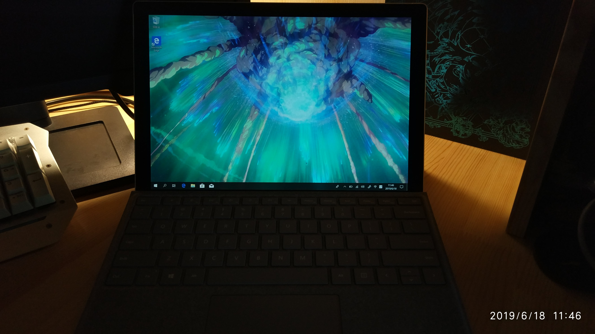

刚刚高中毕业的博主也陷入了新设备选购的困难（贫穷蒙蔽了我的双眼），但是和别人不一样的是，我并不是要一个游戏级的设备，而是一个办公级别的设备。起初觉得买个办公本还是很容易的，没想到这东西比游戏本的水还深。游戏本通常5000起步，价格往上看，选配置就是了。办公本就不一样了，配置，散热，模具，屏幕，续航，还有键盘的体验都需要充分考虑（想买一个符合心意的设备的话）。经过深思熟虑，除开了小米笔记本，预选了华为笔记本，联想ThinkPad，iPad Pro，或者直接买个手机算了。
经过考虑过后，我决定了联想的ThinkPad T480，6999的价位，带独显，虽然没有同价位的华为配置高，但是ThinkPad的键盘和它的品质毕竟也是很多年了，这里要给大家一个建议就是千万千万千万不要买低价位的ThinkPad，那些东西都是挂个ThinkPad的名字，懂了吧~ 购买的整个过程我都在打游戏，分散了注意力的结果就是订单信息输错了，于是赶紧退款，恰好退款的时候是周六。京东的退款规定是1-2个工作日。。。。。当时差点枯了，不过又多了一天时间考虑。我突然想起微软是不是有个PC平板二合一的东西，既然我是要求轻便，那就可以去康康。看了苏菲之后就爱上了，退款一到马上换了surface pro 6。
狗东自营本身很快，我懒得做开箱了，随便拿手机照了一张（说的好像你有相机一样），苏菲6搭载了Windows 10家庭版系统，有office全家桶，我买的这款是8代低压i5和它的集显，128GB固态硬盘，另送一张三星128GB储存卡，整个机身770克（不算键盘）散热很优秀，能把热量很均匀的散发。机身侧面是磁吸的方式来固定充电接口和键盘接口，以及能把触控笔吸在侧面，一个3.5mm耳机孔还有两个USB，接口很少，其实我觉得够用，实在不行可以买个扩展嘛！对了，触控笔要单独买，700块，但是非常好用，配合上onenote一些软件，就是一个学术用的surface啦。2K显示器看着已经很爽了，前后有摄像头，虽然像素不高但是有总比没有好，成像素质还行，没有防抖。
它的续航能力很强，可以自己调节模式，官方给的续航是大于8小时，其实具体看你怎么用，不过这个续航时长确实让我感觉非常棒了。在高性能模式的时候能跑动ps什么的软件，注意只是能跑动，能正常使用，如果你想有一个很好的使用体验还是用台式机比较好，当然我买苏菲的还有一个原因就是台式机太热了，写个博客啥的根本不要台式机好吧！！！手机又不方便，所以我意识到了一个便携式的Windows还是挺重要的，总的来说买苏菲之前我觉得我可能要亏，买了之后我觉得真香。微软NB！